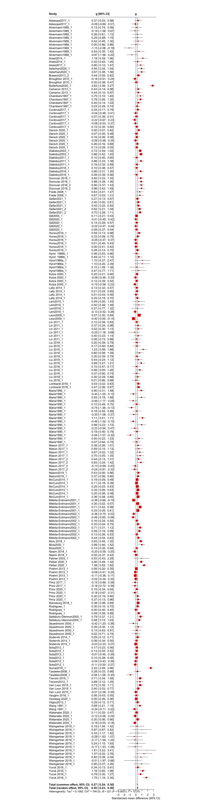

library(emmeans) # for wrangling moderation effects
library(metafor) # for running a meta-analysis
library(tidyverse)
library(easystats)4 Introduction to meta-analysis
A meta-analysis has several steps before we can finally sit down, grab a cup of hot beverage and run some models. We need to:
Identify a clearly defined research question 📖
Conduct a literature search 📖
Apply inclusion and exclusion criteria 📖
Extract the data 📖
These steps are explained in detail in the essential reading for this block. Whenever we reach a point where the book chapter provides more explanation, you’ll see a little book emoji: 📖. Our starting point in this tutorial is the happy stage where we’ve collated the information from different studies into a single dataset which we’re now going to analyse.
Scenario
To guide this tutorial, we’re going to use a study by Danielson et al. (2024) which investigated how effective refutation text is in confronting scientific misconceptions.
“Refutation texts typically contain three important components—first, they state the common but inaccurate knowledge that is assumed to be held by the reader; second, they explicitly indicate what is incorrect; and third, they provide the correct information, often with supporting explanations.”
Danielson et al. (2024)
An experiment studying the effect of refutation on misconceptions might go as follows:
- Participants complete a questionnaire measuring their level of misconceptions on a specific topic (for example climate change or vaccinations)
- They are then presented with refutational messages challenging common misconceptions.
- Participant complete the questionnaire again, often after a delay. The difference between their first misconception level and the second (or third) is the effect size of interest.
Alternatively, a refutation study might adopt an independent-measures design, where participants are presented with either a refutation text or an non-refutation text, after which they complete a misconception questionnaire measuring how accurate their beliefs are. In this case the effect size is the difference in misconceptions between the two conditions.
Other more complicated designs also exists, and researchers also tend to measure covariates or moderators which might affect the effect of interest.
Danielson et al. (2024) collated a sample of 71 articles that report the results of a refutation studies and meta-analysed the effect sizes to get the overall pooled effect. They also also explored an array of moderators that could explain the variability of reported refutation effects across studies.
Packages
We’re going to use the following packages:
The data
About this dataset (public notice)
You only need to read this if you stumbled upon this tutorial randomly and you are not an Advanced Statistics student.
Danielson et al. (2024) report a thorough, well-conducted meta-analysis that addresses the research question from multiple angles. They share their dataset and full analytic scripts in a transparent and user-accessible way at https://osf.io/8kfue/.
The dataset used in this tutorial is from their OSF website, simplified for teaching purposes in the following ways:
Two out of several outcomes were filtered to keep the dataset more concise.
The dataset here only focuses on independent design studies, whereas the original dataset includes repeated measures designs.
Only selection moderators was kept in the datasets.
Column names were changed to be more obvious.
Some effect sizes were removed so I can demonstrate how to compute them.
The analysis presented in this section will also be simpler and in some respects incorrect - the point of this week’s tutorial is to illustrate the principles of meta-analysis. We’ll get into more complex estimation methods that are closer to the ones reported in Danielson et al. (2024) next week.
The data are stored in the danielson2024.csv. Download the data and import it to Posit Cloud. Once you’ve done so, you can read the data into R by running:
refute_tib <- here::here("data/danielson2024.csv") |>
readr::read_csv()Danielson et al. (2024) collated effect sized pertaining to multiple different outcomes. The ones included in our dataset are
- Accurate beliefs - in which the outcome was the accuracy of beliefs about a topic
- Inaccurate beliefs - in which the outcome was the opposite, i.e. inaccuracy of beliefs.
High scores on these two measures would indicate an opposite outcome. Because of this, we cannot include them in a single meta-analysis - the result would make no sense.
We’ll focus on the accuracy of beliefs only (you’ll get a chance to explore the inaccuracy in the worksheet). Information about the outcome is stored in the variable outcome_types . We can check the possible values for this variable as:
refute_tib$outcome_types |> unique()[1] "inacc_beliefs" "acc_beliefs" “acc_beliefs” is the value that we want to keep. We do so using the filter() command:
- 1
-
Use the
refute_tibdataset and pipe it into the next command. Store the results into a new object calledacc_tib. - 2
-
Use the
filter()function to only keep rows that match a specific condition. - 3
-
Specify the matching condition so that only rows where
outcome_typesis equal to “acc_beliefs” are kept in the new dataset.
4.1 Calculate effect sizes
acc_tibWe’re going to spend some time in this section so get comfy. If you look around the dataset, you’ll notice that we have a lot of blank cells. This is because not all studies provide the same information - for some studies, the authors were able to extract sample sizes, means, and standard deviations of the treatment (refutation text) and the control group (non-refutation text). In other studies, this information was not available, so they extracted the t-statistic. In a few lucky cases, Cohen’s d was reported directly.
In order to run a meta-analysis, we need two metrics:
The effect size
The variance associated with this effect size (standard error will also work)
Meta-analysis is a weighted linear model 📖, meaning that not all cases contribute equally to the final estimate. An example where we’ve already encountered weighting are robust models - cases that are too extreme are down-weighted so they have lesser impact on the final estimate.
In a meta-analysis, the problem is a little different. Some effect sizes will have more variability associated with them than others. This translates into more uncertainty around the estimate. If an estimate is uncertain, we should give it a lower weight so that it doesn’t unduly impact the final pooled effect. The variance associated with an estimate is therefore used as an inverse weight - the more variance, the lower the weight is assigned to the estimate and vice versa for small variance.
The reason why the authors extracted group means, standard deviations and sample sizes is that we can use them to calculate Cohen’s d:
\[ \hat{d} = \frac{\bar{X_1} - \bar{X_2}}{\sqrt{\frac{(n_1 - 1)s_1^2 + (n_2-1)s_2^2}{n_1 + n_2 - 2}}} \]
Here, \(\bar{X_1}\) and \(\bar{X_1}\) are the group means, \(n_1\) and \(n_2\) are the sample sizes, and \(s_1^2\) and \(s_2^2\) are the group variances (square of the group standard deviations). To calculate the variance associated with Cohen’s d we need the d itself and the sample sizes:
\[ var(d) = \frac{n_1 + n_2}{n_1n_2} + \frac{d^2}{2(n_1 + n_2)} \]
We’ll use R functions to calculate the effect sizes for us, but it’s important to know how different effect sizes and variances are calculated, so that you know what kind of information to record when you’re going through the papers for your own meta-analysis.
We can also approximate Cohen’s d from test statistics, like t and F. Direct calculation from means and SDs is often better, but the necessary values are not always reported in the papers. For example, we can calculate Cohen’s d from the t-statistic as:
\[ \hat{d} = t\sqrt{\frac{1}{n_1} + \frac{1}{n_2} } \]
In reality, the effect size we’ll be using in our analysis is Hedge’s g, but if we have the metrics for calculating Cohen’s d, we can easily covert into Hedge’s g.
Hedge’s g is a correction to Cohen’s d intended to account for small study effects, a phenomenon in which studies with small sample sizes tend to produce disproportionately large effect sizes and bias the final estimate as a result 📖.
Let’s take a first stab at this in R. We’ll use the escalc() function (“effect size calculation”) from the metafor package, which will be our powerhouse for the meta-analysis. The code below looks like a big chunk, but really we’re just specifying where the necessary information is located in our dataset.
1acc_tib <- metafor::escalc(
2 measure = "SMD",
3 m1i = treatment_mean,
4 m2i = control_mean,
5 sd1i = treatment_sd,
6 sd2i = control_sd,
7 n1i = treatment_n,
8 n2i = control_n,
9 ti = t,
10 vtype = "UB",
11 data = acc_tib,
12 var.names = c("g","vg")
) |>
13 tibble::as_tibble()- 1
-
Initiate the
escalc()function. We’ll be storing the result into the same objectacc_tib. - 2
- Specify what kind of measure you want to use. The “SMD” setting will calculate Hedge’s g for us.
- 3
- Column that contains group 1 mean.
- 4
- Column that contains group 2 mean.
- 5
- Column that contains group 1 SD.
- 6
- Column that contains group 2 SD.
- 7
- Column that contains group 1 sample size.
- 8
- Column that contains group 2 sample size.
- 9
- Column that contains the t statistic (if applicable)
- 10
- Variance type - “UB” is the setting we want for independent designs.
- 11
- Specify which dataset to use.
- 12
- Define the variable names. This function will add two variables to our dataset - the effect size and the variance. We’ll call them “g” and “vg”, respectively.
- 13
-
Convert back into a tibble. This step is necessary because by default
escalc()returns an object that is, well, not a tibble.
Inspect the dataset again:
acc_tibScroll all the way to the right and you’ll see that columns g and vg have now been populated with values. However, if you click through the later rows of the dataset, some cells are still blank. That’s because these rows didn’t contain the information necessary for calculating Hedge’s g. Instead, the authors were able to extract Cohen’s d, which we can convert into Hedge’s g.
Writing functions
There’s no functions without FUN. Meta-analysis inherently requires all sorts of conversion shenanigans, so you will find yourself in need of a custom function sooner or later. In our case, we need find a way to convert d into g, including the associated variance.
Function is lazy person’s tool, and a good coder is inherently lazy (or efficient - you decide). If there is an operation you need to complete at least twice, you can write a function instead of writing out all the steps multiple times manually.
To convert d to g, we need to multiply d by a modifier, which we’ll call j:
\[ \begin{split} j &= 1-\frac{3}{4\times df - 1} \\ df &= N-2 \\ g &= d \times j \end{split} \]
in which df stands for degrees of freedom and N is total sample size. The values we’ll need are d and the sample size - everything else can worked out based on that.
Say that we have a d of 0.6 and a sample size of 23. We can save these values as
d <- 0.6
n <- 23Then based on this, we calculate:
df <- n-2
j <- 1 - (3/(4*df - 1))
g <- d*j
g[1] 0.5783133To wrap it all into a function, we write:
- 1
-
Choose the name for the function.
d_to_gis a good and informative choice. Then usefunction()to create it. Inside offunction(), specify the arguments you need to supply to perform the operations when the function runs. In our case, the arguments are is d and n. - 2
- Calculate degrees of freedom.
- 3
- Calculate the j adjustment
- 4
- Calculate Hedge’s g,
- 5
- Return the result of g.
We can now use our function:
d_to_g(d = 0.6, n = 23)[1] 0.5783133We can do the same for variance, where we adjust the variance associated with d with using the square of j:
vd_to_vg <- function(vd, n){
df = n-2
j = 1 - (3/(4*df - 1))
vg = vd*(j^2)
return(vg)
}Conditional calculations
We’re now in a situation where we want to apply the functions above, but only to the rows that don’t yet have a value in the g and vg column - otherwise we would overwrite the values we calculated in the previous step with escalc().
We can use the use the case_when() function introduced in the previous tutorial to modify the v and vg column conditionally:
acc_tib <- acc_tib |>
1 dplyr::mutate(
2 g = dplyr::case_when(
3 !is.na(d) ~ d_to_g(d, total_N),
4 .default = g
)
)- 1
- Use mutate to modify the g column.
- 2
-
Modify g using the conditions specified within
case_when() - 3
-
Check whether the d column is a missing value with
is.na(d). If it is not a missing value (denoted by !), then used_to_g()to calculate g. Use the d column as input for thedargument and total_N as input for thenargument. - 4
- In all other cases, just keep the values that are already in the g column.
We can do the same for the variance of g (vg) - we’ll just add the necessary lines to the existing code to save space:
acc_tib <- acc_tib |>
dplyr::mutate(
g = dplyr::case_when(
!is.na(d) ~ d_to_g(d, total_N),
.default = g
),
vg = dplyr::case_when(
!is.na(vd) ~ vd_to_vg(vd, total_N),
.default = vg
)
)If we look through our dataset now, we’ll see that all of the values for g and vg are populated. We’re ready to fit the model!
About effect sizes…
This is just the small snippet of the the fun puzzles you might come across in a meta-analysis. Sometimes you might also need to convert an effect size from or into correlation coefficients (because some relevant studies might be cross sectional instead of exeperimental), from or into odds ratios (because some outcomes are measured as binary variables), guess the mean difference from a plot (because the exact value is not reported), work backwards from a confidence interval around d to figure out its standard error and variance, and all sorts of other mathematical leaps.
General rules are:
Figure out in advance what kind of study designs you’re most likely to come across - cross-sectional or experimental? This might seem like a nebulous question at this stage, but if you’ve spent a while immersing yourself in the relevant literature, you’ll be able make this judgement with ease.
The above decision will determine what sort of effect sizes you will likely work with, and this is the effect size you’ll convert other effect sizes into. For group comparisons, it’s Hedge’s g, for cross-sectional designs (linear models) it’s the correlation coefficient. For categorical outcomes, it’s the odds ratio.
Find out what metrics you need in order to calculate your target effect size.
Find out what metrics you need in order to convert a different type of effect size into your target effect size.
Start the long journey of extracting this information from papers.
Additional guidance is available in the book chapter accompanying this block 📖. Another useful resource for your bookmarks is Borenstein et al. (2021)
4.2 Fit the model
Now we have our effect sizes, we need to figure out whether to fit a fixed effects model or a random effects model.
Fixed-effects model assumes that the effect sizes we’re working with are sampled from the same overarching population. Under this assumption, the only source of variability among the effect sizes is sampling variability caused by the fact that each study collected a different random sample from the same population.
Random-effects model - under this model, the samples are assumed to be sampled from different populations and the effect sizes themselves therefore aim to estimate parameters for different populations. As a result, there are two sources of variability in the model: (1) sampling variability, which is the same as above, and (2) effect size variability caused by sampling from different populations.
In practice, random-effects model is a more realistic conceptualisation 📖 so that’s the model we’re going to fit. It is also often the default setting in R functions.
acc_rma <- metafor::rma(yi = g, vi = vg, data = acc_tib) Here, yi argument requires the column with the effect sizes, vi requires the column with the variances, and data requires the name of our dataset.
Nice and easy.
4.3 Evaluate model fit
Inspect the results:
acc_rma
Random-Effects Model (k = 222; tau^2 estimator: REML)
tau^2 (estimated amount of total heterogeneity): 0.1562 (SE = 0.0217)
tau (square root of estimated tau^2 value): 0.3952
I^2 (total heterogeneity / total variability): 73.50%
H^2 (total variability / sampling variability): 3.77
Test for Heterogeneity:
Q(df = 221) = 794.0298, p-val < .0001
Model Results:
estimate se zval pval ci.lb ci.ub
0.2973 0.0325 9.1371 <.0001 0.2335 0.3610 ***
---
Signif. codes: 0 '***' 0.001 '**' 0.01 '*' 0.05 '.' 0.1 ' ' 1The output doesn’t look very nice, but we’ll deal with it. We’re in the murky waters of meta-analysis now, easystats won’t save us.
First we get a number of statistics related to the heterogeneity of our effect sizes:
\(\tau^2\) (tau^2) is the estimated variance of the population effects. Its square room \(\tau\) (tau) is then the standard deviation of these effects.
I2 describes the percentage of variability in the meta-analysis that is due to variability across the effect sizes rather than due to sampling variation.
H2 is the ratio of the total amount of variability over sampling variability.
Q-test gives us an overall test of heterogeneity. The Q statistic itself is calculated as a sum of squared differences between individual study effect sizes and the overall pooled effect size, weighted by the inverse variance of each study.
Each population effect (estimated by primary studies) was estimated to differ from the overall population effect by \(\tau = 0.4\). According to I2, 73.5% of all variability in the model was due to heterogeneity among the effect sizes. Total variability was also 3.77 times greater than sampling variability, H2 = 3.77. Finally, the Q-test indicated a statistically significant amount of heterogeneity in the model, Q(221) = 794.03, p < .001.
Usual warnings regarding significance tests apply. We’re working with a large sample, so the Q-test is bound to be statistically significant. That said, the remaining statistics are in agreement - there is a lot of heterogeneity among our effect sizes. This tells us that (1) a random-effects model makes sense (2) it might be in our interest to try to model some of that heterogeneity with moderators.
Before we do that, let’s confirm this visually and inspect our effect sizes with a forest plot.
4.4 Visualising meta-analyses
We can visualise our meta-analysis using a forest plot. Creating forest plots can be as easy as breathing…
metafor::forest(acc_rma)
… or it can feel like nails on a chalkboard.
A forest plot shows the effect sizes on the x axis and different studies on the y axis. In our case, we have 222 studies, so the plot looks extremely dense. I’ve included a nice full version of this forest plot at the end of the tutorial so you can see what it’s meant to look like - go take a look and come back. We need to try to create something that can at least pretend to fit on a page of a PDF file (e.g. in a report or journal article).
Take a look at the “study_id” column in the dataset. You’ll see that some studies contribute multiple effect sizes, not just one. For example “Adesope2017” has two effect sizes (rows) associated with it, Alvermann1989 contributes nine effect sizes, and so on.
For the visualisation, we can average the effect sizes within studies into one - this will reduce the number of effects our forest plot needs to show, which should make it more manageable.
Averaging effect sizes
To be clear, this would be completely inappropriate to do for the purposes of fitting the model itself. There are different ways of dealing dependent effect sizes which we’ll cover next week. With the forest plot, we just want to get a sense of how the effect sizes are distributed and how they differ from each other, and averaging allows us to do so.
1forest_tib <- acc_tib |>
2 dplyr::summarise(
mean_g = mean(g, na.rm = TRUE),
3 mean_vg = mean(vg, na.rm = TRUE),
4 .by = study_id
)- 1
-
We’ll store the result into a new tibble called
forest_tib - 2
- Use the summarise() function.
- 3
-
Create a
mean_gsummary by applying themean()function to the “g” column - 4
-
Create a
mean_vgsummary by applying themean()function to the “vg” column
Now that we’ve created the averaged values, we’ll refit the meta-analysis. Again, this is not a model we’ll interpret in any way - we’re just creating it as a helper object so we can apply the forest() function to it.
forest_rma <- metafor::rma(yi = mean_g, vi = mean_vg, data = forest_tib)Now we can create the forest plot:
metafor::forest(forest_rma, slab = forest_tib$study_id)
That’s better! The slab = forest_tib$study_id argument can be added to label the name of our studies properly. The forest() function has a lot of additional settings you can play with to make your forest plot prettier. You can explore them by running help(metafor::forest) in the console.
Reading this plot: at the very bottom of the plot, we have the overall pooled effect size - we’ll ignore this in this instance because it’s based on effect sizes we averaged within studies. If you created a forest plot based on the original sample, this value should match the output from your rma object.
On the left, we have a list of our studies.
In the middle are the effect sizes (in our case, Hedge’s gs) associated with the studies on the left. The squares represent the point estimates, the bars are the confidence intervals. The size of the square represents the weight - the larger the square, the more weight each study has been assigned. Notice that the square sizes are inversely related to the width of the confidence intervals - small squares have wide intervals and vice-versa. This makes sense - if a study has a wide CI, there’s a lot fo uncertainty associated with the estimate. As a result, it gets smaller weight.
The right side of the plot gives us the exact numeric values for the points and the CIs.
On the whole, the studies vary greatly. Most point-estimates appear to indicate a positive effect (greater than zero). Some confidence intervals just hit zero, others overlap it substantially. A number of studies indicate a negative effect, and there’s a handful of highly weighted studies with extremely large positive effects (e.g. Yuruk2016 or Suma2018). This is in line with the heterogeneity statistics we saw above - the effect sizes vary, and this variation is unlikely to be explained by sampling variability alone.
Not pretty enough? Forest plots with ggplot2 (optional)
If the forest() function doesn’t satisfy your creative craving, you can always create them from scratch using ggplot2. We can extract the necessary data using the familiar easystats convenience function:
rma_plot_tib <- model_parameters(forest_rma) |>
tibble::tibble()This creates a nice tibble containing everything we need - we have the individual estimates, confidence intervals, as well as study weights. The world is our oyster!
The nice thing about this is that we have a lot more control than we do with the forest() function. So if we decided there’s a better way to display our 222 effect sizes than averaging them, we would be able to do so. For example, we could split the forest plot by different levels of the moderators and create several plots instead of one.
Productive struggle is the best way to learn so I’ll let you figure out how to do create forest plots with ggplot on your own. Ask me if you get stuck!
4.5 Interpreting the pooled estimate
Back to our model:
acc_rma
Random-Effects Model (k = 222; tau^2 estimator: REML)
tau^2 (estimated amount of total heterogeneity): 0.1562 (SE = 0.0217)
tau (square root of estimated tau^2 value): 0.3952
I^2 (total heterogeneity / total variability): 73.50%
H^2 (total variability / sampling variability): 3.77
Test for Heterogeneity:
Q(df = 221) = 794.0298, p-val < .0001
Model Results:
estimate se zval pval ci.lb ci.ub
0.2973 0.0325 9.1371 <.0001 0.2335 0.3610 ***
---
Signif. codes: 0 '***' 0.001 '**' 0.01 '*' 0.05 '.' 0.1 ' ' 1The key results from our meta-analysis are under the “Model Results:” part of the output:
estimate se zval pval ci.lb ci.ub
0.2973 0.0325 9.1371 <.0001 0.2335 0.3610 *** The “estimate” is our overall pooled effect size. Overall effect is therefore positive, g = 0.297. The direction of an effect will always depend on how we calculated the group difference - if we computed the mean of the treatment group minus the mean of the control group, a positive effect size indicates an effect in favour of the treatment (because the treatment effect was larger). This is true in our case - the mean difference was operationalised as the mean accuracy score of the group presented with a refutation message minus the mean accuracy of the control group.
Standardised effect sizes are not the easiest to interpret (which is why other sections of these tutorial series bang on about interpreting the raw parameter estimates from models), but they are unavoidable in meta-analyses. Here are three ways of making sense of them:
Use “benchmarks”. Cohen suggested that a Cohen’s d of 0.2 is considered “small”, 0.5 is “medium”, and 0.8 is “large”. Hedge’s g is an adjusted Cohen’s d so we can use these benchmarks if we want to. Based on this, the effect we found would be small. The cut-off for what’s considered small, medium, and large is completely arbitrary here and most meta-analyses in social sciences will be around the 0.2 mark so this doesn’t tell us a lot.
Interpret as a difference in standard deviation. The conversion into Cohen’s d is similar to standardisation we’re used to when working with standardised betas in a linear model. So a d or g = 0.5 indicates that the difference between groups is half a standard deviation; g = 0.3 is (almost) a third of standard deviation difference.
Use group overlap percentage to put the difference into context. For example, this tool: https://rpsychologist.com/cohend/ allows you to see how much potential distributions overlap under different values of Cohen’s d. For d = 0.3, 88.1% of the group distributions overlap (under some assumptions about the group means and standard deviations). For the purposes of the module, interpreting in standard deviation units is enough. If you’re working on your own meta-analysis, you can use this tool to set up some reasonable means and SDs for the control and the treatment group, and see what sort of difference your pooled estimate translates into.
The confidence intervals are pretty narrow and indicate that this effect could be as small as 0.23 or as large as 0.36. We don’t particularly care about the p-value. The goal of a meta-analysis is to estimate the size of an effect and the samples in our meta-analysis are not a random subset of many possible meta-analytic samples that exist somewhere out there in the ether. Conceptually, the p-value doesn’t make sense here.
What we do care about is whether there are any predictors that might change the magnitude or the direction of this effect and explain the heterogeneity among our effect sizes. We can explore this in a moderation analysis.
4.6 Moderation analysis
We can think of two broad categories of moderators: theoretical and methodological
Theoretical moderators - same as predictors in any other model, these are the variables that can be expected to change the effect size of interest based on some theoretical framework.
Methodological moderators - these moderators include methodological characteristics of the primary studies from which we derived the effect sizes. Some examples: was the study cross-sectional or experimental? Did the study use a double-blind procedure? Did the study use one measure as opposed to another measure? What was the age of the individuals in the sample? Was the sample university students?
Any (relevant) variable can be explored as a moderator. Danielson et al. (2024) examined a wide range of moderators including various sample characteristics, stimuli characteristics and design considerations. The ones we’re going look at in our analysis are :
Whether or not participants were assigned into the control or experimental condition randomly (
random_assignment)Length of the text presented to the participants (in words,
text_length)
We can add the moderators into the model using the mods argument (note the squiggle ~ just before we list the variable names):
acc_mods_rma <- metafor::rma(
yi = g,
vi = vg,
mods = ~ random_assignment + text_length,
data = acc_tib
) code Warning: 61 studies with NAs omitted from model fitting.We get a warning saying that 61 studies had missing values for one or both of the moderators - this is common in meta-analysis. Sometimes the relevant information just isn’t available for some studies, in which case we can’t include them in the analysis. metafor deals with this automatically. Inspect the results:
acc_mods_rma
Mixed-Effects Model (k = 161; tau^2 estimator: REML)
tau^2 (estimated amount of residual heterogeneity): 0.1085 (SE = 0.0206)
tau (square root of estimated tau^2 value): 0.3293
I^2 (residual heterogeneity / unaccounted variability): 63.24%
H^2 (unaccounted variability / sampling variability): 2.72
R^2 (amount of heterogeneity accounted for): 0.00%
Test for Residual Heterogeneity:
QE(df = 158) = 437.9062, p-val < .0001
Test of Moderators (coefficients 2:3):
QM(df = 2) = 2.1047, p-val = 0.3491
Model Results:
estimate se zval pval ci.lb ci.ub
intrcpt 0.2260 0.3298 0.6851 0.4933 -0.4205 0.8725
random_assignmentrandom 0.1026 0.3319 0.3091 0.7573 -0.5480 0.7532
text_length -0.0004 0.0003 -1.4314 0.1523 -0.0009 0.0001
---
Signif. codes: 0 '***' 0.001 '**' 0.01 '*' 0.05 '.' 0.1 ' ' 1Once again we get the heterogeneity statistics, which are indicating that heterogeneity is present. Additionally, the test of moderators is the equivalent of an overall model fit test - it tells us whether our model with moderators is an significant improvement over the null model, which in this case, it isn’t: QM(2) = 2.1047, p = 0.3491 .
Next we get the model results. This time we have three lines:
intrcpt - the intercept, and therefore the estimated value of g when the predictors are zero. In this case that means non-random assignment and text length of zero - the intercept is therefore not really useful to interpret in this case because no texts had a length of zero words.
random_assignmentrandom - tells us the difference in g for random vs non-random assignment. In this case, the average effect size for random assignment was greater by b = 0.1026, however this difference may range from -0.5480 to 0.7532 (and include zero) based on the confidence intervals.
text_length is a continuous moderator. Based on the point estimate, there’s a very very tiny negative relationship between text length and the effect size, in which g decreases by -0.0004 with each increasing word. Even for a 100 word increase, this difference is negligible -0.0004 * 100 = -0.04. Confidence intervals confirm this and include zero.
This output tells us all we need here. If we had a more complex design with more than two categories in moderators, we could use emmeans() to generate predicted values for g at different levels of the moderator. For example:
- 1
- Take the fitted model
- 2
-
Pipe it into the
emmprep()function. This is necessary, otherwiseemmeans()doesn’t know how to deal with rma models. - 3
-
In
emmeans()specs = “1” is used to predict the overall effect, split for different levels of random assignment (by = "random_assignment").
code random_assignment = non-random:
code 1 emmean SE df asymp.LCL asymp.UCL
code overall 0.191 0.3300 Inf -0.456 0.838
code
code random_assignment = random:
code 1 emmean SE df asymp.LCL asymp.UCL
code overall 0.293 0.0348 Inf 0.225 0.362
code
code Confidence level used: 0.95As a sense check we can subtract the effect for non-random assignment from the effect of random assignment: 0.293 - 0.191 = 0.102, which is the value we got for random_assignmentrandom in the previous output. Again, it’s non really needed in this case, but a useful trick to have in your pocket.
That’s it! We’ve just ran our first meta-analysis!
4.7 Report
When reporting any model, it all boils down to being as clear, precise, and transparent about what we did, and interpreting the results (to whatever extent is possible given our data). Here, we could go for something like:
We conducted a random-effects meta-analysis using Restricted Maximum Likelihood Estimation (REML) to estimate the effect of refutation texts on the accuracy of beliefs about scientific contexts. Primary effect sizes were synthesised using Hedge’s g. The overall pooled effect was in favour of refutation texts - participants tend to show greater accuracy of beliefs when they are presented with refutation texts compared to non-refutation texts, g = 0.30, 95% CI [0.23, 0.36]. Although this effect was small, indicating that the means of the two groups differed by less than a third of standard deviation, confidence intervals around the estimate were narrow, suggesting high precision. Cochran’s Q-test indicated a statistically significant amount of heterogeneity among the effect sizes Q(221) = 794.03, p < .001 .
We followed this up with a moderation analysis, examining the effect of random assignment and the length of the refutation (or the control) text. Neither predictor moderated the estimated effect size. The point estimate suggested that the effect of refutation texts was slightly larger in studies that employed random assignment, however the confidence intervals spanned across negative and positive values indicating that a difference of zero due to (non)random assignment is plausible, b = 0.102, 95% CI[-0.548, 0.7532]. Similarly, the effect of text length was close to zero: b = -0.0004, 95% CI[-0.0009, 0.0001].
4.8 Exercises
What does this code do?
Here’s all the code we have written in this section. Can you remember what each line of each codechunk does? Are there any codechunks that you struggle to make sense of? Make sure to revisit the section in which it is used and take notes.
acc_tib <- refute_tib |>
dplyr::filter(
outcome_types == "acc_beliefs"
)acc_tib <- metafor::escalc(
measure = "SMD",
m1i = treatment_mean,
m2i = control_mean,
sd1i = treatment_sd,
sd2i = control_sd,
n1i = treatment_n,
n2i = control_n,
ti = t,
vtype = "UB",
data = acc_tib,
var.names = c("g","vg")
) |>
tibble::as_tibble() d_to_g <- function(d, n){
df <- n-2
j <- 1 - (3/(4*df - 1))
g <- d*j
return(g)
}acc_tib <- acc_tib |>
dplyr::mutate(
g = dplyr::case_when(
!is.na(d) ~ d_to_g(d, total_N),
.default = g
)
)acc_rma <- metafor::rma(yi = g, vi = vg, data = acc_tib) metafor::forest(acc_rma)forest_tib <- acc_tib |>
dplyr::summarise(
mean_g = mean(g, na.rm = TRUE),
mean_vg = mean(vg, na.rm = TRUE),
.by = study_id
)Worksheet
Danielson et al. (2024) also looked at the inaccuracy of beliefs and sythesised the effect sizes in a separate meta-analysis. If you’re using a separate quarto file from your tutorial notes, you’ll need to re-read the data, which is stored in the file danielson2024.csv .
Use the tutorial to complete the following tasks:
- Filter the dataset so it only contains rows where the recorded outcome is belief inaccuracy. All effect sizes are already computed.
- Estimate the overall pooled effect using random-effects meta-analysis.
- Create a forest plot visualising your model.
- Interpret the heterogeneity statistics.
- Fit a moderation model using publication status and text length as moderators.
- Interpret the restults and write them up in a short report.
Check worksheet values
Once you’ve finished the worksheet, you can ask me to look through your work and give you feedback. Remember that you should also practice writing up the results in a brief report, not just running the code. If you’re stuck, you can use the quiz below to guide you.
You can also use the quiz below - if you fitted the models the correctly, your answers should match the values below.
Worksheet check
How many studies were included in the meta-analysis of inaccurate beliefs?
\(\tau^2\): 0.07
I2: 58.03
Q: 30.61
Overall, there was a significant amount of heterogeneity in the model:
Pooled effect size: -0.3806879
Moderation - publication status estimate: 0.0655184
Moderation - text length estimate: 0.0024001
The results of the pooled estimate is in agreement with the meta-analysis of accurate beliefs:
The moderators in the model were useful in explaining the heterogeneity identified among the primary effect sizes:
4.9 Appendix
Full forest plot
Back to visualising meta-analyses
